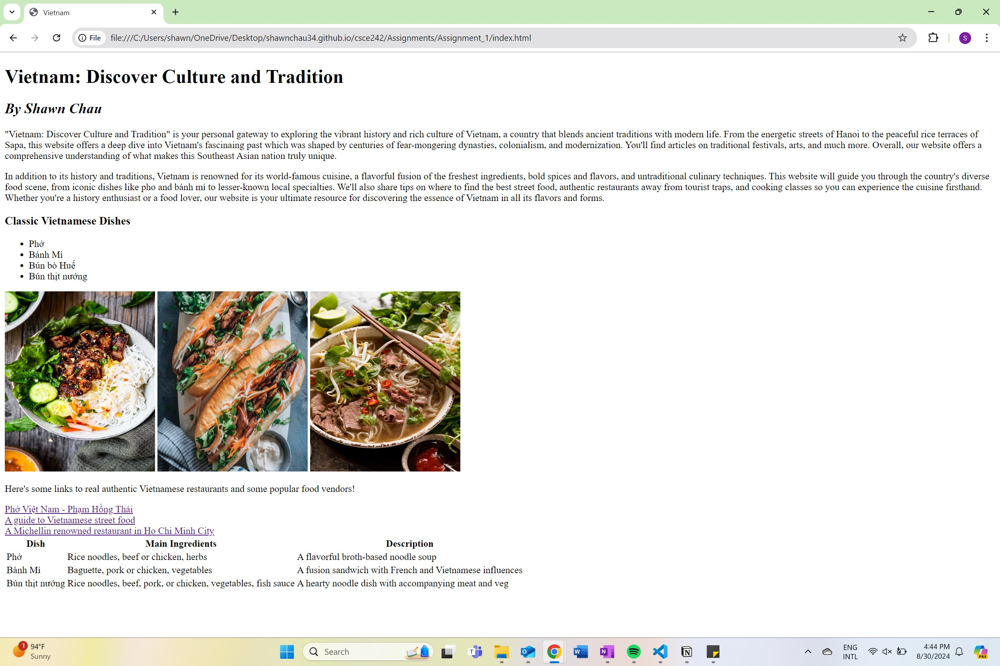
I created a website about Vietnam and its different cultures and traditions. I touched on topics such as Vietnam's landscapes, food, music, and tradition. I used basic html with no css styling.
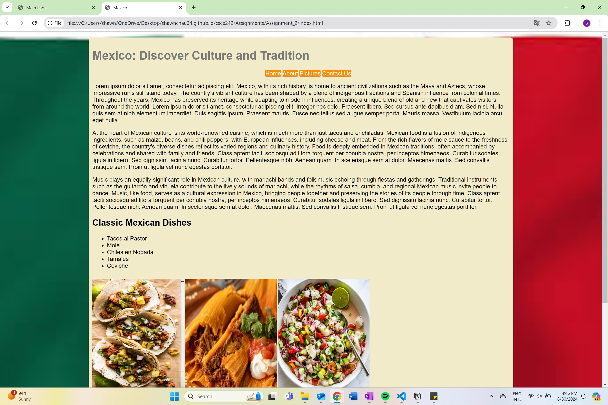
I created a website about Mexico and its different cultures and traditions. I touched on topics such as traditional Mexican cuisine and music. I included tables, images, and lists with basic css styling.
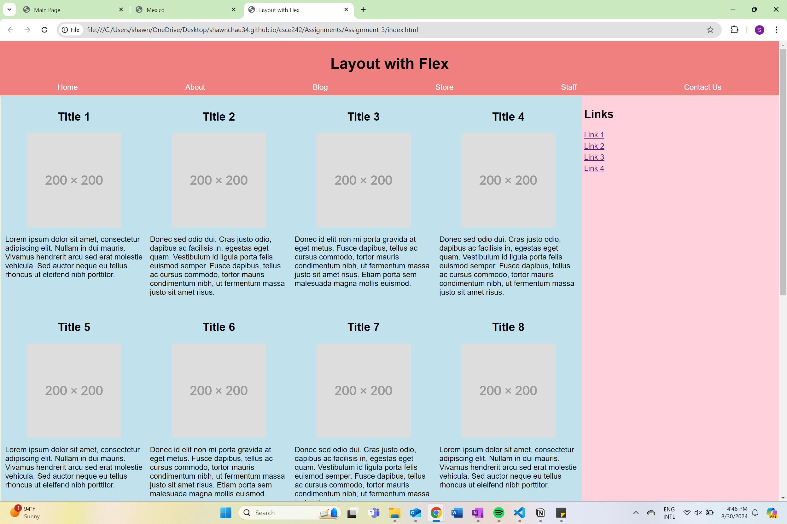
I recreated a simple page layout given to us by Professor Plante and used CSS styling and flexbox to format it properly. I used elements such as flex, padding, width, and other elements of styling. I also used Media Query to allow the webpage to display horizontally on large screens and vertically on smaller screens.
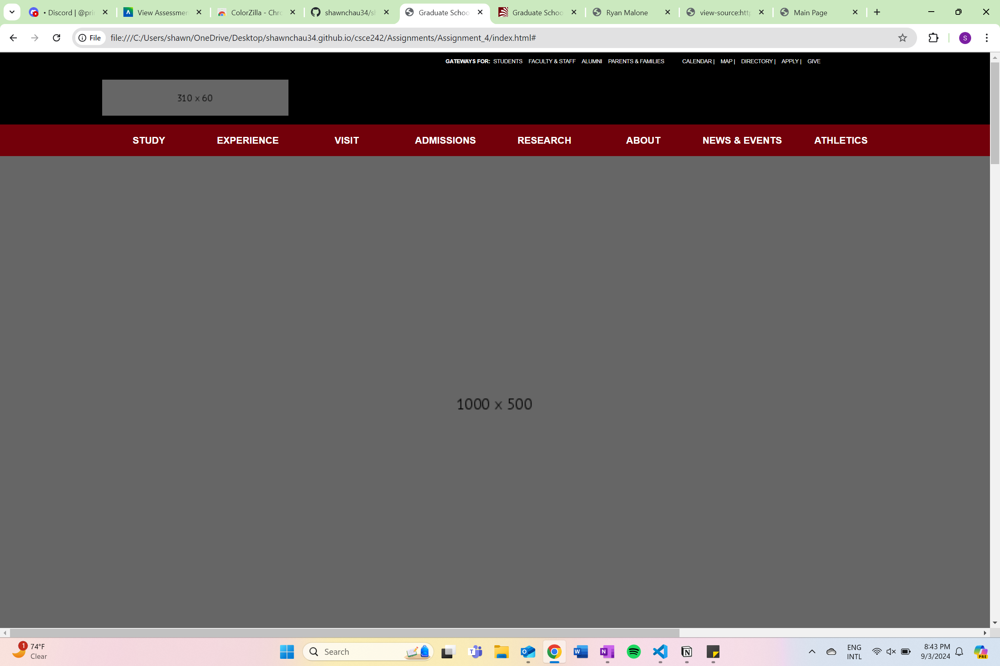
For this assignment, I recreated a USC webpage concerning Graduate School programs using the same styling from the original.
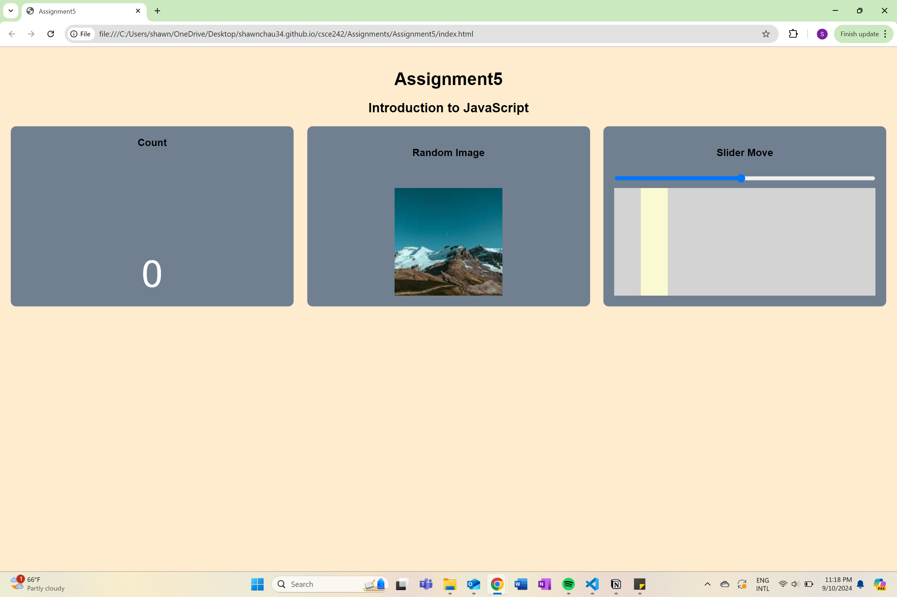
For this assignment, I recreated a page given to us using classic html, css, and Javascript.
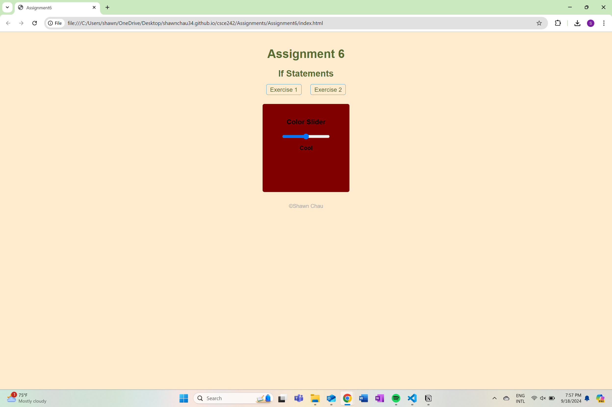
For this assignment, I recreated given parameters including a slider that changed background color as well as a button that changed the size of a picture on click.
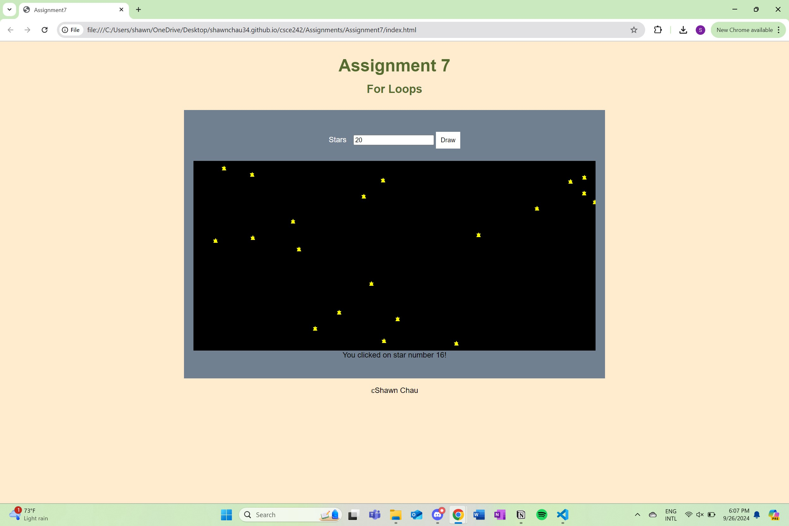
For this assignment, I recreated given parameters including a starbox that drew a certain # of stars based on the users input and displayed a message when clicked on.
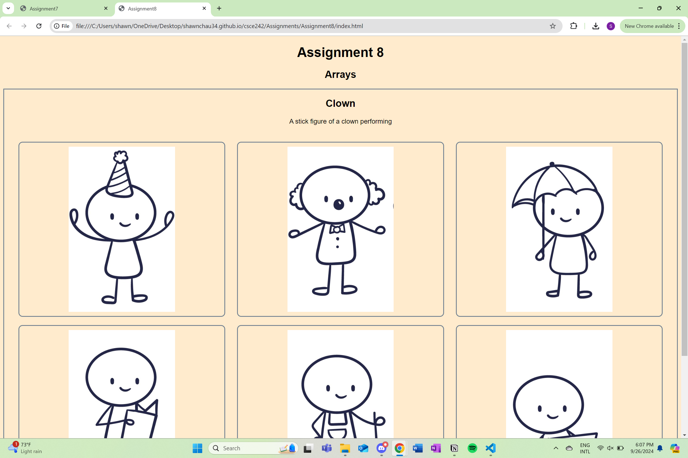
For this assignment, I recreated the given parameters with given pictures and used javascript to loop through all of the arrays, display them, and then display a message when clicked on.
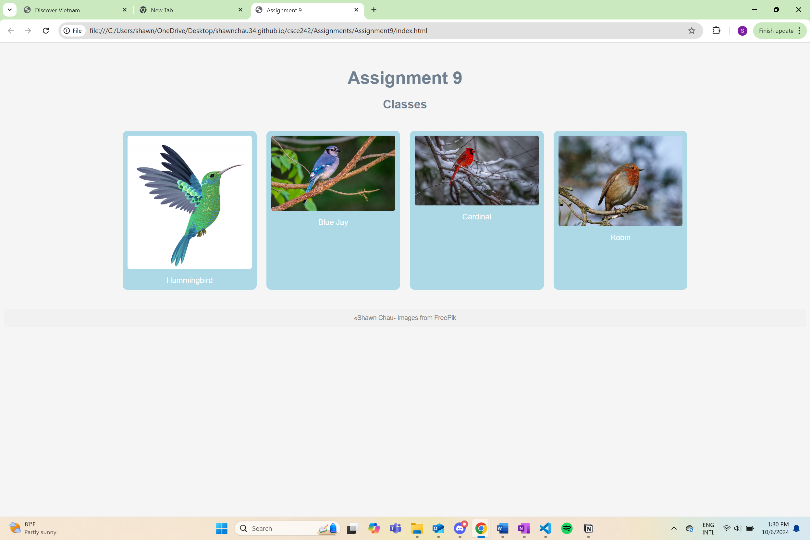
For this assignment, I recreated the given webpage with a list of arrays and when clicked on, a new class was appended and displayed information about the bird.
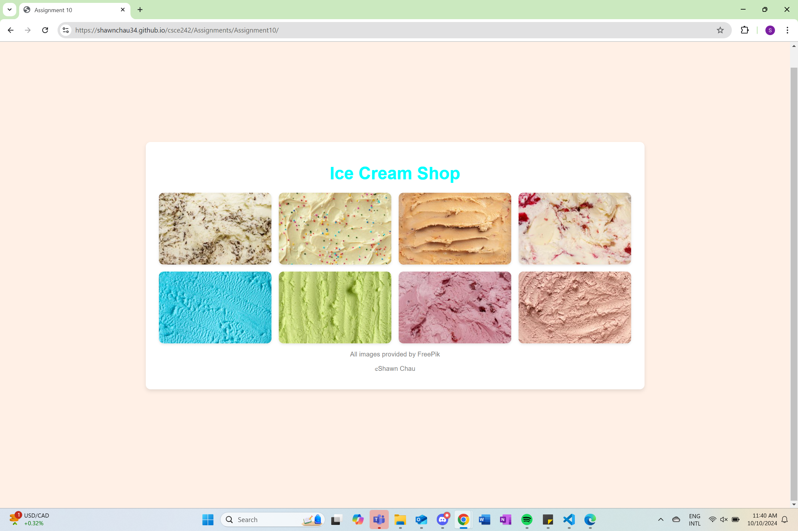
I recreated a website with given parameters and a json file given to us by the professor. I connected this to my webpage using async await and added some hover features.
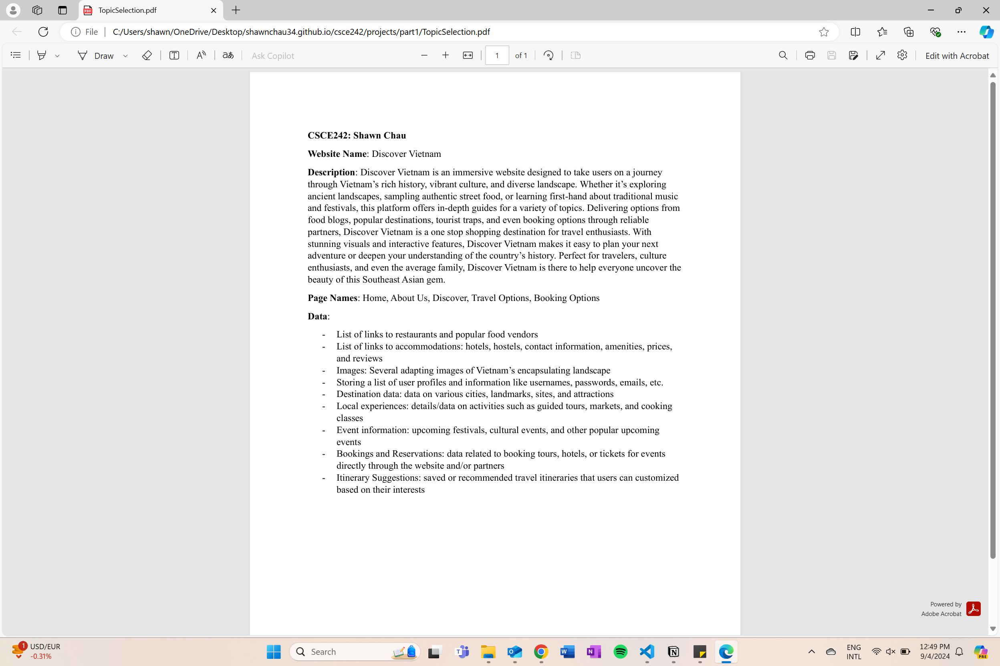
This is a PDF description about what my website will be about, how it will be formatted, and what data will be stored on the site.

I created a Wireframe of what my project website would look like. I used Mockitt to draw up different web pages and designed it to include all elements.
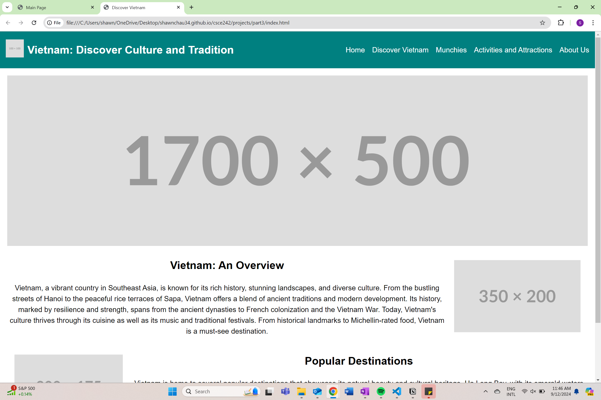
I brought my wireframe design from part two to life using basic html and css. I stuck to just about the same format and color scheme and used flex to style the format.
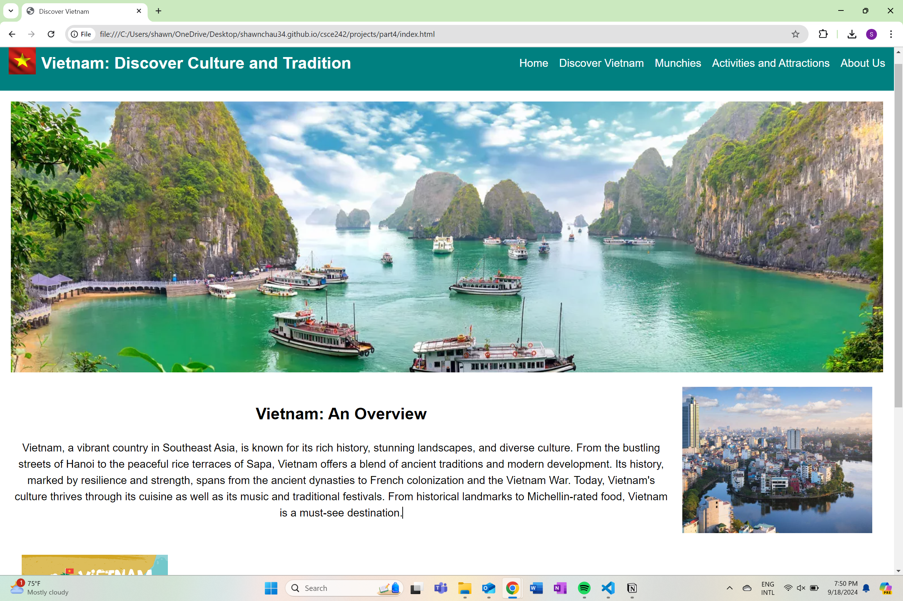
Building off of my Project Part 3, I styled my project page with pictures and included a hamburger navigation bar on small screens.
Building off of my Project Part 4, I improved on some critiques from not only the TA's but also my peers. There were some minor improvements, but the main thing I added was te javascript functions to display a modal when certain boxes were clicked.
Building off of my Project Part 5, I removed the hardcoded data from my website and instead stored them in corresponding JSON files. I then used Javascript to parse through this data and display it in the proper places.